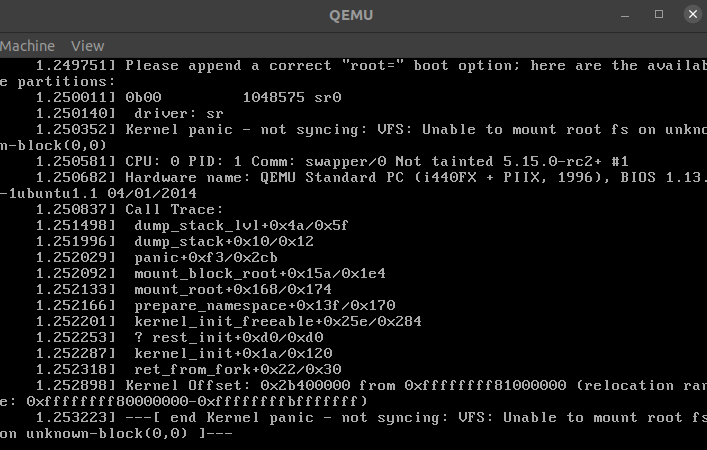

用 GDB 调试内核模块
安装依赖
➜ sudo apt-get install build-essential vim git cscope libncurses-dev libssl-dev bison flex
下载源码
https://wiki.ubuntu.com/Kernel/SourceCode
➜ git clone git://git.launchpad.net/~ubuntu-kernel/ubuntu/+source/linux/+git/focal
➜ git clone git://git.kernel.org/pub/scm/linux/kernel/git/torvalds/linux.git linux_mainline
➜ git clone git://git.kernel.org/pub/scm/linux/kernel/git/stable/linux-stable.git linux_stable
配置
Copying the Configuration for Current Kernel from /boot
➜ /boot ls
config-5.10.0-1008-oem memtest86+.elf
config-5.10.0-1045-oem memtest86+_multiboot.bin
config-5.11.0-34-generic System.map-5.10.0-1008-oem
config-5.11.0-36-generic System.map-5.10.0-1045-oem
efi System.map-5.11.0-34-generic
grub System.map-5.11.0-36-generic
initrd.img vmlinuz
initrd.img-5.10.0-1008-oem vmlinuz-5.10.0-1008-oem
initrd.img-5.10.0-1045-oem vmlinuz-5.10.0-1045-oem
initrd.img-5.11.0-34-generic vmlinuz-5.11.0-34-generic
initrd.img-5.11.0-36-generic vmlinuz-5.11.0-36-generic
initrd.img.old vmlinuz.old
memtest86+.bin
➜ /boot uname -r
5.11.0-34-generic
➜ cp /boot/config-5.11.0-34-generic .config
然后
➜ make oldconfig
接下来一路 Enter, 需要开什么选项, 可以回头再补上
或者只编译适合自己电脑的模块
➜ lsmod > /tmp/my-lsmod
➜ make LSMOD=/tmp/my-lsmod localmodconfig
或图形化操作
➜ make menuconfig
关闭 secure boot, 参考
➜ scripts/config --disable SYSTEM_TRUSTED_KEYRING
➜ scripts/config --set-str SYSTEM_TRUSTED_KEYS ''
➜ scripts/config --disable SYSTEM_TRUSTED_KEYS
➜ scripts/config --set-str SYSTEM_TRUSTED_KEYS ""
或者把认证相关配置全部注释
#
# Certificates for signature checking
#
#CONFIG_MODULE_SIG_KEY="certs/signing_key.pem"
#CONFIG_MODULE_SIG_KEY_TYPE_RSA=y
# CONFIG_MODULE_SIG_KEY_TYPE_ECDSA is not set
#CONFIG_SYSTEM_TRUSTED_KEYRING=y
#CONFIG_SYSTEM_TRUSTED_KEYS=""
#CONFIG_SYSTEM_EXTRA_CERTIFICATE=y
#CONFIG_SYSTEM_EXTRA_CERTIFICATE_SIZE=4096
#CONFIG_SECONDARY_TRUSTED_KEYRING=y
#CONFIG_SYSTEM_BLACKLIST_KEYRING=y
#CONFIG_SYSTEM_BLACKLIST_HASH_LIST=""
#CONFIG_SYSTEM_REVOCATION_LIST=y
#CONFIG_SYSTEM_REVOCATION_KEYS="debian/canonical-revoked-certs.pem"
# end of Certificates for signature checking
编译:
➜ make bzImage -j8
...
OBJCOPY arch/x86/boot/vmlinux.bin
AS arch/x86/boot/header.o
LD arch/x86/boot/setup.elf
OBJCOPY arch/x86/boot/setup.bin
BUILD arch/x86/boot/bzImage
Kernel: arch/x86/boot/bzImage is ready (#1)
通过 QEMU 启动内核
➜ qemu-system-x86_64 -kernel arch/x86_64/boot/bzImage

可以直接在终端显示, 窗口不是必须的; 如果被窗口困住, 按 ctrl + alt + G 退出.
➜ qemu-system-x86_64 -kernel arch/x86_64/boot/bzImage -nographic -append "console=ttyS0"
依次按 ctrl + a, c, q 退出;
报错是因为没有文件系统, /boot/initrd.img 是一个文件系统, 有本书叫 Hands-on Booting: Learn the Boot Process of Linux, Windows, and Unix 对此有详细介绍.
为什么需要这个文件系统? 因为想要运行 systemd (系统的第一个进程), 首先要加载 root 文件系统(即 /), 但 / 可以放在各种类型的文件系统上, 所以需要一个临时的文件系统, 里面存放加载最终文件系统的工具. 如果 root 在 NFS 上, 则临时文件系统还需要 NetworkManager, dhclient, mount 等工具. 临时文件系统又叫 initramfs.
创建一个 initramfs, 重新运行
➜ mkinitramfs -o ramdisk.img
➜ qemu-system-x86_64 -kernel arch/x86_64/boot/bzImage -nographic -append "console=ttyS0" -initrd ramdisk.img
报错:
[ 1.255823] ? process_one_work+0x3d0/0x3d0
[ 1.255950] kthread+0x12a/0x150
[ 1.256124] ? set_kthread_struct+0x40/0x40
[ 1.256253] ret_from_fork+0x22/0x30
[ 1.256291] Kernel Offset: 0x14200000 from 0xffffffff81000000 (relocation range: 0xffffffff8000000)
[ 1.256291] ---[ end Kernel panic - not syncing: System is deadlocked on memory ]---
通过设置内存 -m 512 解决:
➜ qemu-system-x86_64 -kernel arch/x86_64/boot/bzImage -nographic -append "console=ttyS0" -initrd ramdisk.img -m 512
可以看到临时文件系统的工具
(initramfs) which wget
/usr/bin/wget
开启 KVM 可以加速
➜ qemu-system-x86_64 -kernel arch/x86_64/boot/bzImage -nographic -append "console=ttyS0" -initrd ramdisk.img -m 512 --enable-kvm
关于 KVM 和 QEMU:
- https://www.packetcoders.io/what-is-the-difference-between-qemu-and-kvm/
- https://serverfault.com/a/208788
- https://stackoverflow.com/a/61324275
Attaching GDB to QEMU
➜ echo "add-auto-load-safe-path `pwd`/scripts/gdb/vmlinux-gdb.py" >> ~/.gdbinit
➜ cat ~/.gdbinit
source ~/pwndbg/gdbinit.py
add-auto-load-safe-path /home/?/Workspace/kernel/linux_stable/scripts/gdb/vmlinux-gdb.py
QEMU 添加调试选项
➜ qemu-system-x86_64 -kernel arch/x86_64/boot/bzImage -nographic -append "console=ttyS0 nokaslr" -initrd ramdisk.img -m 512 --enable-kvm -s -S
-s监听 1234 端口, 为什么是 1234? 不知道.-Sto pause the kernel until we continue in gdb- Install that kernel on the guest, turn off KASLR if necessary by adding “nokaslr” to the kernel command line.
开启 gdb, vmlinux 在源码根目录下
➜ gdb vmlinux
...
pwndbg> target remote :1234
Remote debugging using :1234
Remote connection closed
可能遇到无法连接的情况, 这是因为 QEMU 监听 IPV6 地址
➜ ss -ap|grep qemu
tcp LISTEN 0 1 [::]:1234 [::]:* users:(("qemu-system-x86",pid=2339102,fd=12))
换 IPV6 地址即可
pwndbg> target remote [::]:1234
Remote debugging using [::]:1234
0x000000000000fff0 in exception_stacks ()
LEGEND: STACK | HEAP | CODE | DATA | RWX | RODATA
根据 https://www.kernel.org/doc/html/latest/dev-tools/gdb-kernel-debugging.html#examples-of-using-the-linux-provided-gdb-helpers 操作, 但在 gdb 中执行 lx-symbols 报无此命令
➜ scripts git:(master) ✗ grep -i "lx-symbols" . -r
./gdb/linux/symbols.py:lx-symbols command."""
./gdb/linux/symbols.py: super(LxSymbols, self).__init__("lx-symbols", gdb.COMMAND_FILES,
pwndbg> source /home/root_/Workspace/kernel/linux_stable/scripts/gdb/vmlinux-gdb.py
Traceback (most recent call last):
File "/home/root_/Workspace/kernel/linux_stable/scripts/gdb/vmlinux-gdb.py", line 26, in <module>
import linux.utils
ModuleNotFoundError: No module named 'linux'
看过 https://stackoverflow.com/a/61272866 之后, 发现有两个 vmlinux-gdb.py
➜ find . -name "vmlinux-gdb.py"
./vmlinux-gdb.py
./scripts/gdb/vmlinux-gdb.py
修改 ~/.gdbinit, 用源码根目录的 vmlinux-gdb.py
➜ cat ~/.gdbinit
source ~/pwndbg/gdbinit.py
add-auto-load-safe-path /home/?/Workspace/kernel/linux_stable/vmlinux-gdb.py
pwndbg> n
0x00000000000eca4d in ?? ()
...
pwndbg> lx-symbols
loading vmlinux
list_for_each: Uninitialized list '0xffffffff829a44a0 <modules>' treated as empty
pwndbg> bt
#0 0xffffffff81c11f1b in native_safe_halt () at ./arch/x86/include/asm/irqflags.h:51
#1 0xffffffff81c11dae in arch_safe_halt () at ./arch/x86/include/asm/paravirt.h:167
#2 default_idle () at arch/x86/kernel/process.c:716
#3 0xffffffff81043675 in arch_cpu_idle () at arch/x86/kernel/process.c:708
#4 0xffffffff81c12025 in default_idle_call () at kernel/sched/idle.c:112
#5 0xffffffff810e799f in cpuidle_idle_call () at kernel/sched/idle.c:194
#6 do_idle () at kernel/sched/idle.c:306
#7 0xffffffff810e7ba0 in cpu_startup_entry (state=state@entry=CPUHP_ONLINE) at kernel/sched/idle.c:403
#8 0xffffffff81c03b7f in rest_init () at init/main.c:733
#9 0xffffffff82bb8f7c in arch_call_rest_init () at init/main.c:886
#10 0xffffffff82bb993f in start_kernel () at init/main.c:1141
#11 0xffffffff82bb85a0 in x86_64_start_reservations (real_mode_data=real_mode_data@entry=0x13f30 <bts_ctx+3888> <error: Cannot access memory at address 0x13f30>) at arch/x86/kernel/head64.c:525
#12 0xffffffff82bb862d in x86_64_start_kernel (real_mode_data=0x13f30 <bts_ctx+3888> <error: Cannot access memory at address 0x13f30>) at arch/x86/kernel/head64.c:506
#13 0xffffffff81000107 in secondary_startup_64 () at arch/x86/kernel/head_64.S:283
#14 0x0000000000000000 in ?? ()
pwndbg> b arch_cpu_idle
Breakpoint 1 at 0xffffffff81043660: arch_cpu_idle. (2 locations)
随便找个函数, 比如 https://github.com/torvalds/linux/blob/master/net/ipv4/tcp_input.c
pwndbg> b tcp_gro_dev_warn
Breakpoint 2 at 0xffffffff81a81c36: file net/ipv4/tcp_input.c, line 245.
以上就是内核调试步骤.